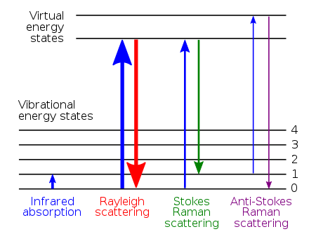
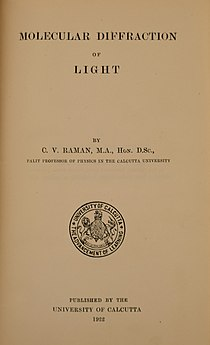
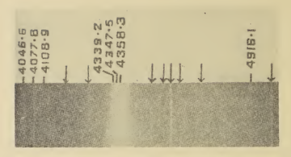

One of Raman's interests was on the scientific basis of musical sounds. He was inspired by Hermann von Helmholtz's The Sensations of Tone, the book he came across when he joined IACS. He published his findings prolifically between 1916 and 1921. He worked out the theory of transverse vibration of bowed string instruments based on superposition of velocities. One of his earliest studies was on the wolf tone in violins and cellos. He studied the acoustics of various violin and related instruments, including Indian stringed instruments, and water splashes. He even performed what he called "Experiments with mechanically-played violins."
Raman also studied the uniqueness of Indian drums. His analyses of the harmonic nature of the sounds of tabla and mridangam were the first scientific studies on Indian percussions. He wrote a critical research on vibrations of the pianoforte string that was known as Kaufmann's theory. During his brief visit of England in 1921, he managed to study how sound travels in the Whispering Gallery of the dome of St Paul's Cathedral in London that produces unusual sound effects. His work on acoustics was an important prelude, both experimentally and conceptually, to his later works on optics and quantum mechanics.
Raman, in his broadening venture on optics, started to investigate scattering of light starting in 1919. His first phenomenal discovery of the physics of light was the blue colour of seawater. During a voyage home from England on board the S.S. Narkunda in September 1921, he contemplated the blue colour of the Mediterranean Sea. Using simple optical equipment, a pocket-sized spectroscope and a Nicol prism in hand, he studied the seawater. Of several hypotheses on the colour of the sea propounded at the time, the best explanation had been that of Lord Rayleigh's in 1910, according to which, "The much admired dark blue of the deep sea has nothing to do with the colour of water, but is simply the blue of the sky seen by reflection". Rayleigh had correctly described the nature of the blue sky by a phenomenon now known as Rayleigh scattering, the scattering of light and refraction by particles in the atmosphere. His explanation of the blue colour of water was instinctively accepted as correct. Raman could view the water using Nicol prism to avoid the influence of sunlight reflected by the surface. He described how the sea appears even more blue than usual, contradicting Rayleigh.
As soon as the S.S. Narkunda docked in Bombay Harbour (now Mumbai Harbour), Raman finished an article "The colour of the sea" that was published in the November 1921 issue of Nature. He noted that Rayleigh's explanation is "questionable by a simple mode of observation" (using Nicol prism). As he thought: Looking down into the water with a Nicol in front of the eye to cut off surface reflections, the track of the sun's rays could be seen entering the water and appearing by virtue of perspective to converge to a point at a considerable depth inside it. The question is: What is it that diffracts the light and makes its passage visible? An interesting possibility that should be considered in this connection is that the diffracting particles may, at least in part, be the molecules of the water themselves.
When he reached Calcutta, he asked his student K. R. Ramanathan, who was from the University of Rangoon, to conduct further research at IACS. By early 1922, Raman came to a conclusion, as he reported in the Proceedings of the Royal Society of London: It is proposed in this paper to urge an entirely different view, that in this phenomenon, as in the parallel case of the colour of the sky, molecular diffraction determines the observed luminosity and in great measure also its colour. As a necessary preliminary to the discussion, a theoretical calculation and experimental observations of the intensity of molecular scattering in water will be presented.
True to his words, Ramanathan published an elaborate experimental finding in 1923. His subsequent study of the Bay of Bengal in 1924 provided the full evidence. It is now known that the intrinsic colour of water is mainly attributed to the selective absorption of longer wavelengths of light in the red and orange regions of the spectrum, owing to overtones of the infrared absorbing O-H (oxygen and hydrogen combined) stretching modes of water molecules.
Raman's second important discovery on the scattering of light was a new type of radiation, an eponymous phenomenon called the Raman effect. After discovering the nature of light scattering that caused blue colour of water, he focused on the principle behind the phenomenon. His experiments in 1923 showed the possibility of other light rays formed in addition to incident ray when sunlight was filtered through a violet glass in certain liquids and solids. Ramanathan believed that this was a case of a "trace of fluorescence." In 1925, K. S. Krishnan, a new Research Associate, noted the theoretical background for the existence of an additional scattering line beside the usual polarised elastic scattering when light scatters through liquid. He referred to the phenomenon as "feeble fluorescence." But the theoretical attempts to justify the phenomenon were quite futile for the next two years.
The major impetus was the discovery of Compton effect. Arthur Compton at Washington University in St. Louis had found evidence in 1923 that electromagnetic waves can also be described as particles. By 1927, the phenomenon was widely accepted by scientists, including Raman. As the news of Compton's Nobel Prize in Physics was announced in December 1927, Raman ecstatically told Krishnan, saying: "Excellent news... very nice indeed. But look here Krishnan. If this is true of X-Rays, it must be true of Light too. I have always thought so. There must be an Optical analogue to Compton Effect. We must pursue it and we are on the right lines. It must and shall be found. The Nobel Prize must be won."
But the origin of the inspiration went further. As Compton later recollected "that it was probably the Toronto debate that led him to discover the Raman effect two years later." The Toronto debate was about the discussion on the existence of light quantum at the British Association for the Advancement of Science meeting held at Toronto in 1924. There Compton presented his experimental findings, which William Duane of Harvard University argued with his own with evidence that light was a wave. Raman took Duane's side and said, "Compton, you're a very good debater, but the truth isn't in you."
Krishnan started the experiment in the beginning of January 1928. On 7 January, he discovered that no matter what kind of pure liquid he used, it always produced polarised fluorescence within the visible spectrum of light. As Raman saw the result, he was astonished why he never observed such phenomenon all those years. That night he and Krishnan named the new phenomenon as "modified scattering" with reference to the Compton effect as an unmodified scattering. On 16 February, they sent a manuscript to Nature titled "A new type of secondary radiation", which was published on 31 March.
On 28 February 1928, they obtained spectra of the modified scattering separate from the incident light. Due to difficulty in measuring the wavelengths of light, they had been relying on visual observation of the colour produced from sunlight through prism. Raman had invented a type of spectrograph for detecting and measuring electromagnetic waves. Referring to the invention, Raman later remarked, "When I got my Nobel Prize, I had spent hardly 200 rupees on my equipment," although it was obvious that his total expenditure for the entire experiment was much more than that. From that moment they could employ the instrument using monochromatic light from a mercury arc lamp which penetrated transparent material and was allowed to fall on a spectrograph to record its spectrum. The lines of scattering could now be measured and photographed.